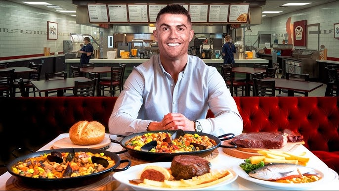

Your Holistic Fitness Plan 🥗
A complete guide to nourishing your body and building strength, inside and out.
Quick Navigation
Our Diet Philosophy
This isn't a restrictive diet; it's a lifestyle built on balance, nourishment, and sustainability. Our philosophy focuses on:
- Whole Foods: Prioritizing foods that are as close to their natural state as possible—fruits, vegetables, lean proteins, and whole grains.
- Mindful Eating: Paying attention to your body's hunger and fullness cues. Eat when you're hungry, stop when you're satisfied.
- 80/20 Rule: Aim to eat nutritious foods 80% of the time, leaving 20% for flexible treats. This makes healthy eating sustainable and enjoyable without guilt.
- Hydration: Water is essential for energy, metabolism, and overall health. We emphasize consistent hydration throughout the day.
Weekly Meal Schedule
| Day | Breakfast | Lunch | Dinner |
|---|---|---|---|
| Monday | Oatmeal with Berries | Quinoa Salad with Chickpeas | Grilled Chicken & Veggies |
| Tuesday | Scrambled Eggs with Spinach | Lentil Soup | Baked Salmon & Asparagus |
| Wednesday | Greek Yogurt with Nuts | Whole Wheat Wrap with Hummus | Tofu Stir-fry |
| Thursday | Smoothie with Protein Powder | Chicken Salad Sandwich | Brown Rice with Black Beans |
| Friday | Whole Grain Pancakes | Tuna Salad | Pasta with Marinara Sauce |
| Saturday | Avocado Toast | Leftover Pasta | Homemade Pizza on Whole Wheat |
| Sunday | Omelette with Peppers | Grilled Cheese on Whole Wheat | Roast Chicken & Root Vegetables |
Fueling Your Body Right
Hydration is Key 💧
Aim for 8-10 glasses (about 2-3 liters) of water per day. Your needs may increase with intense exercise.
- Carry a reusable water bottle as a constant reminder.
- Infuse your water with lemon, cucumber, or mint for a refreshing twist.
- Herbal teas and broths also contribute to your daily fluid intake.
Smart Snacking
Healthy snacks can prevent overeating at main meals and keep your energy levels stable. Choose snacks that combine protein and fiber.
- Greek yogurt with a handful of berries.
- Apple slices with a tablespoon of almond butter.
- A small handful of mixed nuts and seeds.
- Baby carrots with hummus.
Complementary Fitness Routine
Nutrition is only half the equation. Pairing your diet with consistent exercise will amplify your results, boost your mood, and improve your long-term health.
The Core Principles
- Cardiovascular Exercise: Activities that raise your heart rate to improve heart health and burn calories.
- Strength Training: Using resistance (weights, bands, or bodyweight) to build and maintain muscle mass, which boosts metabolism.
- Flexibility & Mobility: Stretching and movement to improve range of motion, prevent injury, and reduce soreness.
Sample Weekly Workout Split
| Day | Focus | Example Activities |
|---|---|---|
| Monday | Full Body Strength | Squats, Push-ups, Rows, Lunges, Plank (3 sets of 10-12 reps) |
| Tuesday | Cardio | 30-45 minute brisk walk, jog, or cycling session. |
| Wednesday | Full Body Strength | Deadlifts, Overhead Press, Pull-ups (or lat pulldowns), Glute Bridges. |
| Thursday | Active Recovery | Light Yoga, Stretching, or a leisurely walk. |
| Friday | HIIT (High-Intensity Interval Training) | 20 minutes of: 30s Burpees, 30s Rest; 30s Jumping Jacks, 30s Rest. |
| Saturday | Long-duration Cardio | 60-minute hike, long bike ride, or swimming. |
| Sunday | Full Rest | Relax and allow your body to recover and rebuild. |
Don't Forget Rest & Recovery
Muscles are built during rest, not in the gym. Aim for 7-9 hours of quality sleep per night. Listen to your body; if you feel overly fatigued, take an extra rest day.
Featured Products

Fitness Tracker
₹2,999
Protein Powder
₹1,499
Yoga Mat
₹799
Dietary Glossary
- Macronutrients
- The primary nutrients required in large amounts: carbohydrates, proteins, and fats.
- Micronutrients
- Essential vitamins and minerals required by the body in smaller quantities.
- Calorie
- A unit of energy from food and drink, and the energy used in physical activity.